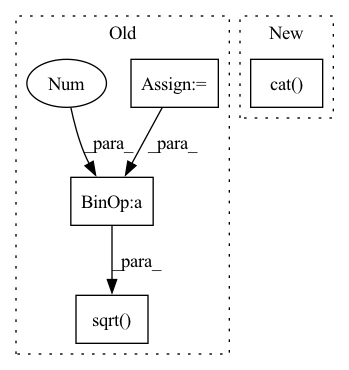

Pattern ID :1861
Before Change
if weights is None:
weights = torch.ones_like(pre_dist_mat)
N = pre_dist_mat.shape[-1]
his = []
// init random coords
best_stress = float("Inf")
best_3d_coords = 2*torch.rand(3, N) - 1
// iterative updates:
for i in range(iters):
// compute distance matrix of coords and stress
dist_mat = torch.cdist(best_3d_coords.t(), best_3d_coords.t(), p=2)
stress = ( weights * (dist_mat - pre_dist_mat)**2 ).sum() / 2
// perturb - update X using the Guttman transform - sklearn-like
dist_mat[dist_mat == 0] = 1e-5
ratio = weights * (pre_dist_mat / dist_mat)
B = ratio * (-1)
B[np.arange(N), np.arange(N)] += ratio.sum(dim=1)
// update - double transpose. TODO: consider fix
coords = (1. / N * torch.matmul(best_3d_coords, B))
dis = torch.sqrt( (coords ** 2 ).sum(axis=1)) .sum()
if verbose >= 2:
print("it: %d, stress %s" % (i, stress))
// update metrics if relative improvement above toleranceAfter Change
stress))
break
return torch.transpose(best_3d_coords, -1,-2), torch.cat( his)
def mds_numpy(pre_dist_mat, weights=None, iters=10, tol=1e-5, verbose=2):
Gets distance matrix. Outputs 3d. See below for wrapper.
Assumes (for now) distrogram is (N x N) and symmetricIn pattern: SUPERPATTERN
Frequency: 3
Non-data size: 4
Instances Fragment ID: 8356776
Project Name: lucidrains/alphafold2
Commit Name: 98e16ad2931a27f90e05df940cff72c00074028d
Time: 2021-01-17
Author: ericalcaide1@gmail.com
File Name: utils.py
M Class Name: AnonimousClass
N Class Name: AnonimousClass
M Method Name: mds_torch(5)
N Method Name: mds_torch(5)
M Parent Class:
N Parent Class:
M File Name: utils.py
N File Name: utils.py
M Start Line: 174
M End Line: 205
N Start Line: 181
N End Line: 215
Before Change
Returns:
quat: size = [B, 4] 4 <===>(w, x, y, z)
trace = torch.einsum("bii->b", rotmat)
m32 = rotmat[:, 2, 1]
m23 = rotmat[:, 1, 2]
m13 = rotmat[:, 0, 2]
m31 = rotmat[:, 2, 0]
m21 = rotmat[:, 1, 0]
m12 = rotmat[:, 0, 1]
trace = torch.clamp_min(trace + 1 , 1e-8)
w = torch.sqrt( trace) / 2
x = (m32 - m23) / (4 * w)
y = (m13 - m31) / (4 * w)
z = (m21 - m12) / (4 * w)After Change
Returns:
Quaternion: size is [B, 4] <===> (w, x, y, z)
return torch.cat( [single_rotation_matrix_to_quaternion_torch(mat) for mat in rotmat], dim=0)
def single_rotation_matrix_to_quaternion_torch(rotation_matrix):
Convert rotation matrix to quaternion coefficient. Fragment ID: 8356775
Project Name: jeff-sjtu/hybrik
Commit Name: 9bb96606dac18a1ab115f0ad848bdd394e7b62d8
Time: 2021-06-23
Author: 1931604@tongji.edu.cn
File Name: hybrik/models/layers/smpl/lbs.py
M Class Name: AnonimousClass
N Class Name: AnonimousClass
M Method Name: rotmat_to_quat(1)
N Method Name: rotmat_to_quat(1)
M Parent Class:
N Parent Class:
M File Name: hybrik/models/layers/smpl/lbs.py
N File Name: hybrik/models/layers/smpl/lbs.py
M Start Line: 923
M End Line: 937
N Start Line: 923
N End Line: 923
Before Change
def reprojection_error(self, objPts_w, imgPts, Rt):
P = np.matmul(self.camMat[:, :3], Rt)
objPts_w_ex = np.concatenate((objPts_w.reshape((self.n, 3)), np.array([np.ones((self.n))]).T), axis=1)
imgRep = np.matmul(P, objPts_w_ex.T).T
imgRep[:, 0] = imgRep[:, 0] / imgRep[:, 2]
imgRep[:, 1] = imgRep[:, 1] / imgRep[:, 2]
error = np.sqrt( (imgPts[:, 0] - imgRep[:, 0].reshape((self.n, 1))) ** 2 + (
imgPts[:, 1] - imgRep[:, 1].reshape((self.n, 1))) ** 2)
error = np.sum(error, axis=0) / self.n
return error[0]
After Change
P = torch.bmm(camMat[:, :, :3], Rt)
// concat 1 to the last column of objPts_w
objPts_w_ex = torch.cat( (objPts_w, torch.ones_like(objPts_w[:, :, :1])), dim=-1)
// Calculate the image points
imgRep = torch.bmm(P, objPts_w_ex.transpose(dim0=-1, dim1=-2)).transpose(dim0=-1, dim1=-2)
// Normalize the image points Fragment ID: 8356758
Project Name: pypose/pypose
Commit Name: f93c59c3ad352fe90aa3072311a7ca67fa442243
Time: 2023-02-25
Author: zitongz3@illinois.edu
File Name: pypose/module/pnp.py
M Class Name: EPnP
N Class Name: EPnP
M Method Name: reprojection_error(5)
N Method Name: reprojection_error(4)
M Parent Class:
N Parent Class:
M File Name: pypose/module/pnp.py
N File Name: pypose/module/pnp.py
M Start Line: 456
M End Line: 466
N Start Line: 469
N End Line: 492